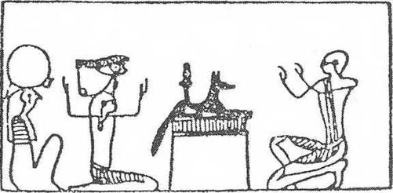
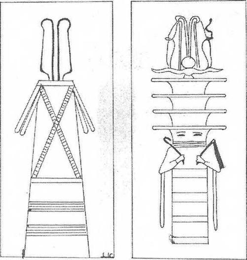
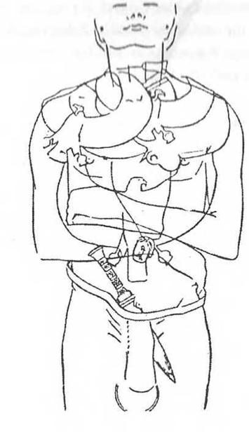

IV. BAB
Ölülerin Sonsuz Bir İsimleri Vardır ve Onlar Kapıları Açıcı Kelimeleri Bilmek Zorundadır
Ölüler Kitabı sayesinde, ölülerin, daha doğrusu ruhsal suretlerinin, doğumlarında onlarla birlikte olan, ölümden sonra onları terk eden “ka’larının elinde kötü ruhların hilelerini bozacak büyülü formüller bulunur. Bu papirüs sayesinde ikinci, yani sonsuz ismini hiçbir insan unutmayacaktır. Bu büyülü isme sahip olmaksızın kimse öbür dünyada yaşayamayacak, onsuz hiçbir tanrı onları temize çıkmışlar arasında saymayacaktır. Ölüler Kitabı sayesinde Kasırgalar Tanrıçası Elephtine’in dört testisinin isimlerini saymak, Vadi Engereğinin nefesini fark etmek, ufukta bir Skarabe şekliyle canlanmadan önce güneşin yeraltı dünyasında her gece aldığı otuz yedi şekli tanımak kolaydır. O güneş ki doğuşunda uçsuz bucaksız Teb şehrinin altın yaprakçıklarla kaplı piramitçikler üzerindeki yüzlerce dikilitaşı ve yeryüzüne hayat dağıtan ve onu sonsuz kılan Rayı yüceltmek için inşa edilmiş tapınakların dev kapılarını aydınlatıyordu...
Ölüler de diriler kadar karanlıkları açan, her günün ışığında Nil’e şarkı söyleyen koç başlı güneşi yüceltmeyi
bilmelidirler. Güneş kayığı! Sokharis’in krallığında, önlerinden geçerken ölüler ilkel tanrılarla birlikte evrenin ilk kaostan çıktığından beri her gün batışının eşiğinde yenilenen AmonRa’nın harika serüveni ile mutlu olurlar. Yeraltı nehrinin kıyılarındaki mevcudiyetleri ile, Batı Bölgesinde her gece AmonRa'nın kutladığı esrarlı fiile hep birlikte katılırlar... Sanatçı tarafından yazılmış duaların gücü ve değeriyle, bundan böyle bedenlerini taşlaşmaktan koruyan büyülü sözcüklerin koruması altındadırlar ve “ka”ları doğru olan tanrılar önünde, olumsuz itirafların kefaret dualarını tekrarlayabilecek, “kapı açıcı” sözleri söyleyebilecek, iç organlarını deşmek için karınlarına bastıran eli bıçaklı veya Shesmou’nun yaptığı gibi “sözcüklerin büyü gücünü yiyen” ya da mumyaların burnuna kokmuş bir nefes gibi giren sinsi tanrılardan kurtulabilecektir. Evet, Ölüler Kitabının derin anlamlı sözlerini iyi bilirlerse, Gökyüzünün Büyükleri’ne meydan okumaya cesaret eden tanrılardan korkmayacaklardır. Ve özellikle CXXV. Bab sayesinde Tanrısal Mahkemenin Gerçek ve Adalet Efendileri’nin önüne, Yedi Işık Saçanın, Yedi Ruh'un, Büyük Hakim Osiris’in, Horus’un dört oğlunun, Amenthi’nin koruyucu tanrılarının önüne, Osiris’in arkasında oturan, koruyan veya yakan, “erkek şekli Şebek olan güneş alevinin kadın şekli” Hetep Sekhus gibi hakimlerin karşısına korkusuzca çıkacaklardır. Dünya yaratıldığından beri, her ölüyü bekleyen ve adına Ruhun Tartılışı denen bu korkunç sınav boyunca, savunmalarını yapabileceklerdir.
Horus’un dört oğlunun refakatindeki Osiris’in önünde yeri öptükten sonra ruhlarını bütün pisliklerden yıkayabileceklerdir.

Ölü, sağda, Üç Işık karşısında tapınma halinde.Birincisi bir lahit üzerine uzanmış "geceleri gören, ölmüşlerin patronu” çakal Anubisin simgelediği Anubis’in Işığıdır. Bu Anubis’in Işığı, ruhun “gözlerinin açılması” töreninden hemen sonra aldığı ışıktır. Diğer iki figür, Güneş Işınlarının Işığı ve Ra’nın Işığıdır. Anubis, Ra’nın oğlu idi.
Çünkü ruh, “bir kadının karnından çıktığı” ve kısa süren var oluşu boyunca, kendine yakışmayan tutkulara kapıldığı için pislenmiştir. E. De Rouge, Cenaze Ayinleri sırasında ölünün ruhunun kendi saf olmayışını bildiğini ısrarla ifade etmektedir. İçinde enkarne olduğu beden tarafından yapılmış hatalar, ruh tarafından hissedilir. Ancak CXXV. Babdaki dualar ve formüller sayesinde, belki de Ranın ateşinde tutuşmadan, gökyüzünün parlaklığında erimeden onu doğrularda bulacak olan kırk iki hakimin, Uluların, Işık Saçanların, Karanlığın Kutlu Yüzlerinin önüne çıkmaktan korkmayacaktır.
Ruhun Tartılması ve Olumsuz İtiraf
Çünkü, cehenneme veya cennete gönderilmeden önce ölünün kalbi, yani vicdanı, tanrıların terazisine konup
tartılıyor ve hükümlendiriliyordu Timsah ağızlı, suaygırı karınlı, metinlerde adı “Ruh Yiyicisi” olarak geçen bir canavar, terazinin yakınında ağzı sulanarak bekliyordu. Geri dönülmez yargıyı bildiren ölüler tanrısı Osiris yönünde bakışlarını yumuşatıyordu. Her biri Eski Mısır’ın Zambak ve Papirüs çifte krallığının bir vilayetini, aynı zamanda insanların işlediği dince kararlaştırılmış kırk iki günahtan birini temsil eden kırk iki adalet tanrısı, topukları üzerine çökmüş, mahkeme önünde kendini temize çıkarması gereken ölüyü sorguya çekiyorlardı. Bu, bütün cenaze papirüslerinin üzerine resmi yapılmış olan ünlü “ruhun tartılması (Psychostasie)” sahnesidir.
Ölü o zaman, Thot’un önünde olumsuz itiraf denilen şeyleri söylemek zorundaydı. Thot, hiçbir Mısır bilimcisinin keşfedemediği nedenlerden dolayı maymun (babun; şebek) figürüyle temsil ediliyordu. Gizli kitapların sahibiydi. Kendi yaşamının milyonlarca yüzyıl süreceğini beyan etmişti (CLXX. Bab); Thot ve çakal, yeryüzündeki düşman “domuzu,” öbür dünyadaki düşman “Apophis Yılanı’nı kovdu. Evet, teraziyi dikkatle izleyen Thot ve çakal kafalı Anubis önünde insanlara karşı günah işlemediğini, tanrıların hoşuna gitmeyecek hiçbir şey yapmadığını, hiyerarşiye karşı saygılı olduğunu, ne öldürdüğünü ne de öldürmek için emir verdiğini, kimsenin acısına neden olmadığını, tapınaklara bırakılması gereken yiyecek ve tütsüleri gizliden ölçerek hırsızlık yapmadığını, ölülerin yiyecek ve içeceğinden çalmadığını, kutsal yerlerde cinsel eylemde bulunmadığını, komşusunun toprağını çalmak için yanlış ölçü kullanmadığını, uzunluk ölçülerini yanlış tutmadığını ve terazide hileli ağırlık kullanmadığını, tanrıların kuşlarını veya kutsal göllerin balıklarını çalmadığını, Teb Amorfun sürülerine zarar vermediğini, tapınakların hâzinesine bırakılması gereken gümüş külçelerini yanlış saymadığını beyan ederek, ölü kendini temize çıkarmalıydı.
Eli bıçaklı kırk iki tanrı önünde, Thot ve Anubis önünde göğsünü yumruklardı: “Tabii,” derdi, “hayatımı iyilik etmek için kullandım ve size yalan söylemeksizin, sonsuz ve sevgili tanrılar, kendimi övebilirim, çünkü en iyiler arasında en iyiydim; zayıf olanları besledim. Susuz olana gün ortasında su verdim; hiçbir şeyi olmayana balık kayığımı ödünç verdim. Osiris, Thot ve Anubis önünde göğüslerini yumruklayan bu ölüler, ne kadar doğru, ne kadar iyilermiş! Öbür dünyada onlara inanacak olursak hepsi yetim babası, dulun dayanağı, şanssızların yardımcılarıymışlar! Heliopolise yemin ederim, hiç günah işlemedim! Kher Aoua’nın alev taşıyıcısına yemin ederim, hiç çalmadım! Hermopolis’in burnuna yemin ederim, hiç aldatmadım! Gölge yiyicisine (ruhları yok eden anlamında) yemin ederim, insan öldürmedim! Göğün çift aslanına yemin ederim! Yiyecek çalmadım! Herakleopolis’in kemik kırıcısına yemin ederim! Tapınağın servetini yağmalamadım! Akrabalarımı gömdüm. Hizmetkarlarımdan hiçbirinin kızını esir etmedim. Kutsal hayvanlardan olan gökyüzünün akbabalarını besledim. Doğduğumdan beri bir defa bile hakim önünde dayak yemedim ve bir ölünün ruhunu ürkütecek hiçbir işaret çizmedim; ‘temiz olmayan şeyleri davet edebilecek bir şekil de çizmedim.” Mezarlarına girmeden önce adalet tanrıları önünde günahsız olan bu ölüler, bu dünyada yalnız dürüst ruhlara tanınan, bir hak olarak üzerinde katiplerin kazıdığı, aşağıdaki sözcüklerden ibaret bir kitabeyi taşıyan mezar taşlarını diktirmeye özen gösterirler:
“Buradan geçen kişi, ölmüş olan (filancayı) hatırlasın. Bu taşı okuyan, okuması yoksa başkasına okutan, ölünün ruhu için bir armağan olan duayı okusun.” (Jean Capart çevirisi.)
Temize çıkmışlarsa, Batı kapılarının önlerinde açıldığını görecek olan ölülerin olumsuz itiraflarının gerisini izleyelim: Boyunlarında XX. Bab’ın bir kopyası asılı, Nil kıyılarında firavun inciri ağaçlarının (Sycomorre; Ficus Sycomorus) altında serinlemek için güneşe çıkabilirler. Noutün yarattıklarından yeniden tat alabilirler. “Size Şükürler olsun; ey tanrılar! Siz ki Mısır toprağından gelenin kokusunu, mumyalandıktan ve gömüldükten sonra ikinci bedenin oluşmasını, iç varlığın dışarı çıkıp görünür hale gelmesini sağlayan büyülü merhemi süründükten sonra, Ranın ruhu olan Herakliopolis’in zümrüd-ü anka kuşu gibi (phoenix) temizlenip karşınıza çıkanı tanırsınız. Size şükürler olsun, ey Amenthi kapılarının ardında yaşayan Osiris peştamalları giyinmiş tanrılar; siz ki benzerlerini öldürdükleri, tapınakların avlularındaki hayvanları çaldıkları, yalnızlıklarında saf olmadıkları veya nehrin sularını pislettikleri için organları çürüyüp kokanları tanırsınız. Tanrısal ruhlar, köpek başlı ruhlar, sonsuza dek şükürler olsun! Ben ki karşınıza çıkmadan ölmüş, yeniden doğmuş, bedeninin yıkanıp sargılara sarıldığını, gözlerime ‘antimuan sürüldüğünü görmüştüm. Bilirsiniz ki yumurtayı daha oluşurken kırmamışım; Mendes tekesi üzerine yemin etmemiş, Abydos’ta, Ptaah Tatenen’in adını anmamışım.

Solda: Stat, tüyler takmış ve şeritler kuşanmış büyü sembolü.Sağda Osiris’in baş ve kolları ile temsil edilmiş kat kat djedi. Amon’un boynuzları altındaki dört omurga halkası ve iki yılan (uroeus) omurgada bulunan hayat akımının, Ateş Yılan’ın sembolüdür. Hayat nefesi olan bu akımı rahip “ısınmak ve tsis’in sıcaklığı ile örtünmek" istenen ölünün ensesine ellerini koyarak aktarır.
Beni kurtarınız! Beni yanınızda tutun, çünkü nefesim saf, kalbim saf, ellerim saftır ve beni görenler şöyle der: ‘Ey saf olan sen, hoş geldin; ruhun aşağı dünyada huzur içinde olsun. Hoş gelmiş ol, çünkü iç organlarını maat gölünde yıkadın; ey saf olan sen Osiris’in, Amenthi boğasının, Osiris Neberdjer’in, omurgası evrenin temeli olan Osiris Djedi’nin karşısına çıkabilirsin.’”
Ölünün Kalbinin ve Maatın Tüyünün Ağırlığı
Ölünün olumsuz itiraflarını dinledikten sonra Tanrıların Yazıcısı Thot ve Mezarlıkların Koruyucusu Anubis, teraziye bakarlar. Ölünün sunağa tören ekmeklerini, birayı, kızıl bir boğanın ayaklarını, dört çanak kanı, beyaz bir ineğin dört çanak sütünü koyduğunu bilirler; bilirler ki ölü, vücuduna lapis lazuliden veya donuk yeşil akikten muskayı (udjat); çiçek bileziği ankhanı’ı vücuduna koydurmuş, mihraplara oniki ateş yaktırmış, tabutunun üzerinde Ölüler Kitabının LXXII. bölümünün kopyasının bırakılmasını sağlamıştır. Bu bölüm aşağı dünyada yolunu kaybetmemek için ölünün ne yapması gerektiğini göstermektedir. Tanrılar bilirler ki ölü, yeşil porselenden yapılmış, üzerine şehirlerin koruyucu ruhlarının resimleri yapılarak süslenmiş ve sedir yağıyla ovulmuş bir güneş kayığının pruvasına kendisini temsil eden bir heykelcik konulmasını vasiyet etmeyi unutmamıştır. Thot ve Anubis, tanrıların terazisini sorguya çekerler...
Eğer Thot elindeki tabletin üzerine terazinin iki kefesinin dengede olduğunu yazabilirse, kefelerden birinde ölünün açık iradesinin ve vicdanının yeri olan kalbi, öbüründe ise Maat’ın, gerçeğin tüyü vardır. O zaman ibiş başlı Thot, ölüler tanrısı Osirise döner ve şöyle der: “Filanca terazide tartıldı; kalbi doğrudur; çünkü bu kalp bir tüyden daha ağır değil.”
O zaman ölü, Maa Kherou olur; yani doğru ve temize çıkmış... Kalbi “annesinin kalbi,” “doğduğundaki kalbi” canlıyken sahip olduğu kalp, ona karşı tanıklık etmemiş, tanrılar karşısında onu ezmemiştir. O zaman ölü tartılmıştır tam, eksiksiz olarak, ebediyet sürdükçe, istediği her yere gidebilir: Yaşayanların toprağına, aşağı dünyanın oniki bölgesine veya Samanyolu’nun ta derinliklerine... Abydos’a gidip Mısır tanrılarının yüzünü görebilir... Ve Maat, ölünün omurgasına büyülü akımını, ebediyen geçirebilir, omuzlarının ve göğsünün kaslarını kucaklayabilir, yani onları nefesi ile etkileyebilir. Ölü, “çok güçlü büyü sözcükleri” duymuştur; günah çıkarmasından sonra “sözün bir gerçeği” Osiris olmuştur. Yeniden Rada doğan Osiris gibi, aydınlatan ışık olabilirdi. Mahkeme önüne gölgesi (dublesi), zekası, belleği ile çıkmış ve hakimler önüne giderken kötülük yapıcı tanrıların, aşağıya giden ölülere kurmasını bildikleri bütün tuzaklardan kaçmasını becerebilmişti; “fiilleri ortasında tabutuna yattıktan sonra, yıldızlı phoenix olmuştu.”
Sekhem’in Şeylerinin Ne Olduğunu Bilmek
Ruh doğru bulunduktan sonra tanrılar tarafından kabul edildiğinden beri o artık bir ölü değildir gökyüzünde on binlerce parçacıktan gruplaşmış “yok olmazların” yanına, hiç de hayali olmayan, sonsuza dek her çeşit yiyeceğin bol olduğu, halk arasında “İalou Tarlaları” “Yiyecek Tarlaları” veya “Kamış Tarlaları” denilen yerlere gidebilecektir. Udjat’ın gözbebeğinde, kollarını kaldırmış olarak duran ve iki bacağında yılan olan, başı güneş kursuyla süslenmiş bir tanrı görecektir.
Dört çeşit ışığı ayırt edebilecektir: Güneş ışığı ile aynı olmayan “Seth’in Işığı”; Karanlıkların Işığı; Yaradılışın Başlangıcındaki Işık; ve son olarak da mezarın arkasındaki. Anubis’in Işığı. İaiou Tarlaları'nda ruhların “bacaklarının bütün gücüyle” mutlu yerlere koştuğunu ve yaşam akımından yoksun, kovulmuş ruhlardan kaçtığını görür. Güneşten çıkan güçler sayesinde, "göklerin gezegenlere bağlandığı sonsuzluktan gelen akımların rüzgarlarından bir kısmı kendilerine bırakılmış olan “Işık Saçanlar’a yaklaşır. (Virey, Religion Egyptienne: Mısır Dini.) Meraklı yaşayanların, önlerinde görülmeyen kapılar açılmadan bilmeye çalıştıkları her şeyi öğreneceklerdir. “Sekhem’in Şeyleri’ni, yani görünen evrenin aydınlatılışını ve esrarlı arınmalardan sonra ruhların neyi simgelediğini bileceklerdir. İalou alanlarında, ne şekli, ne ağırlığı, ne zamanı olan, mavimsi yeşil, kaygan ve sisler içinde belirsiz olan her şeyin dehşetiyle dolu “Milyonlarca Yılın Yıkıcılarının egemen olduğu bölgelerden uzakta, firavun ruhlarının kazlar gibi gakladığını işiteceklerdir. Doğru kişi, suları o kadar mavi Nil’in, Tanrısal Nehir’in kıyılarında, çocukluk perçemlerini kestiği günden beri o kadar sık hayal ettiği o cennetleri tanıyacaklardır. Ölülerin Mısırı’nda, başka bir Nil’i, Göksel Nil’i, uzayda bulunan ve Teb’in meyva bahçeleri kadar yeşil olan çayırları görecektir. Ruh, korkunç tartılma sınavından sonra artık mutlu olmalıdır; çünkü göklerdeki bahçelerde, firavun inciri ağaçlarının gölgesinin serinliğini tadabilen doğru kişiler arasında olacaktır. Kendisi ve ondan sonra ölüm krallığında doğacak olanların hepsi tanrıçaların sütünden içeceklerdir. Bunun için Piramit Tekstlerinde onlara “ağızları doymuş mutlular” denmektedir.
İsmini Thot tabletlerinde okuduktan sonra, Doğru kişi, ışığın ve sözün başlangıcında bulunan ilk titreşimi saklayan “Kozmik Yumurta”yı, “Yumurtası İçindeki Ra”yı seyredecek, ruhu Tanrısal İnek Hathor-Nouit’in memesinden sonsuzluğa akan Göksel Nil’in, yani Samanyolu’nun önünde sevinç duyacaktır. Zekayla sarılmış “Işık Saçanlar”dan, “Amenthi’nin Khuları” önünde, rahibin mumyası başında okuduğu duayı hatırlayacaktır:
“Beni sunaklar alanında, dokuz dirsek (fr. Coudee; dirsekten parmak uçlarına kadar, yaklaşık yarım metrelik bir uzunluk) boyunda bir Khu yap. Bana bak; ben doğdum ve yaşayan bir Khu şeklinde çıkıyorum.”
Ra'nın kendi ışığı olan “phallus”unu, güneş ışığının her yere nüfuz edici şiddetini simgeleyen Osiris’in aslan kafalı uzvunu, hiçlikte başıboş dolaşan, başsız, boyunları aşağıda, yaşam akımlarından yoksun “tersine dönmüşler”i, lanetlenmişleri de görecektir. Göksel Alan ve aynı zamanda “Osiris’in tabutu tarafından dünyanın aydınlatılışı” olan, Sekhem’de “Şeylerin Gecesi’nde bulunacaktır. Kendi iç organlarını yiyen ölü krallardan, pislik haline gelmiş lanetlilerin bel kemiklerini, içinde kalmış azıcık büyüsel gücü emmek amacıyla kıran ve böylece onları ebediyen kişilikten, dünyadaki eski mevcudiyetlerini yeniden gözden geçirmek arzusundan yoksun bırakan işkenceci tanrılardan kaçacaktır. Uzun zamandan beri kafası kesilmiş vücutları içindeki belleksiz ruhların bulunduğu Buto bölgesindeki hareketliliği, kötü ruhlarla çekişen canavarları kovacaktır. İnek sütüyle yıkandıktan, sırtı bir avuç güherçile* ile temizlendikten, el ve ayaklarının yerinde olduğunu gördükten, bacaklarının hareketine ve konuşma gücüne kavuştuktan sonra, Doğru Kişi uzun bir değnek alır ve gök yollarında yorulmadan,
*Tarım’da kullanılan bir tür gübre; patlayıcı özelliği bulunduğundan, barut yapımında da kullanılır.

Toutankhamon’un mumyasının göğsü üzerindeki dört altın kolyenin, siyah reçineden, altın kakmalı, üzerine Bennou kuşunu anlatan bir metin oyulmuş Kalp Skarabesi’nin (kamanın sapı tarafında) sapı karnın sağ tarafına, altucu sol tarafına dönük yerleştirilmiş altın cenaze hançerinin ve altın karın halkasının törene uygun olarak yerleri. Lora Cartıarvon, kral mumyasının keten sargılarını çözdüğünde, üst üste 13 kat teşkil eden 17 gurup sargı arasında 35 adet muska saymıştır. (Jean Capart, ToutAnkhAmon). (Yukarıdaki doküman “Griffith Intitute, Ashmolean Museum, Oxford“ıın bir klişesine göre yayınlanmış, Jean Capart tarafından kopyalanmıştır.)
Kolpaktchy’nin yazdığına göre, “kendisine yaklaşmaması için ölümünü uzakta tutarak” dolaşabilir. Artık o, “tabutunda uzanmış yatarken” onu ayağa kaldıran Anubise denk olmuştur. Gökyüzünün dört kapısı ve Ra'nın esrarlı ışınımlarının önünde; “Shounun gücünün dayandığı gök mekaniği kanunlarının ifadesi” olan yedi basamaklı Schmoun merdiveni önünde; İsis’in “havadan yapılmış” yedi gömleğinin önünde; her yaradılışın tohumunu kendinde saklayan evrensel tohum Noun’un önünde, sevinci gölgelenemez; kırk iki tanrının mahkemesi önünde temize çıkmış olan o, önünde Işık Ruhlar ile kaynaşan Amenthi’nin pırıl pırıl parladığını görünce, sonsuza dek yükselmiş olacaktır. Çünkü bu, Piramit Metinleri’nde yazılmıştır; çok sonraları Ortodoks Hıristiyanlar’ın kutsal kitaplarında yazılmış olduğu gibi: Salihler (Doğrular) değerlidir; çünkü onlar Cennet’te ışık saçan yıldızlar gibi olacaklardır...
Amenemhet’in mezarında bulunmuş ve Jean Capart tarafından çevrilmiş, yakınlarının bizzat ölüye hitab ettikleri şu dua son derece etkileyicidir: “Heykellerin mihraplarında sonsuza dek kalsın... Bedenin nekropoldeki mezarında sabit dursun.. Batı, senin güzelliklerinle sevinsin... Batı dağından istediğin gibi çıkıp girebilesin; önünde öbür dünya kapılarının ardına kadar açıldığını göresin... Dağda yükseldiğin zaman Raya tapabilesin ve ufkun eşiğinde dinlenirken onu yüceltebilesin... Etrafı ebedi bahçelerle çevrili gök havuzunun kıyılarında her zaman gezebilesin...”